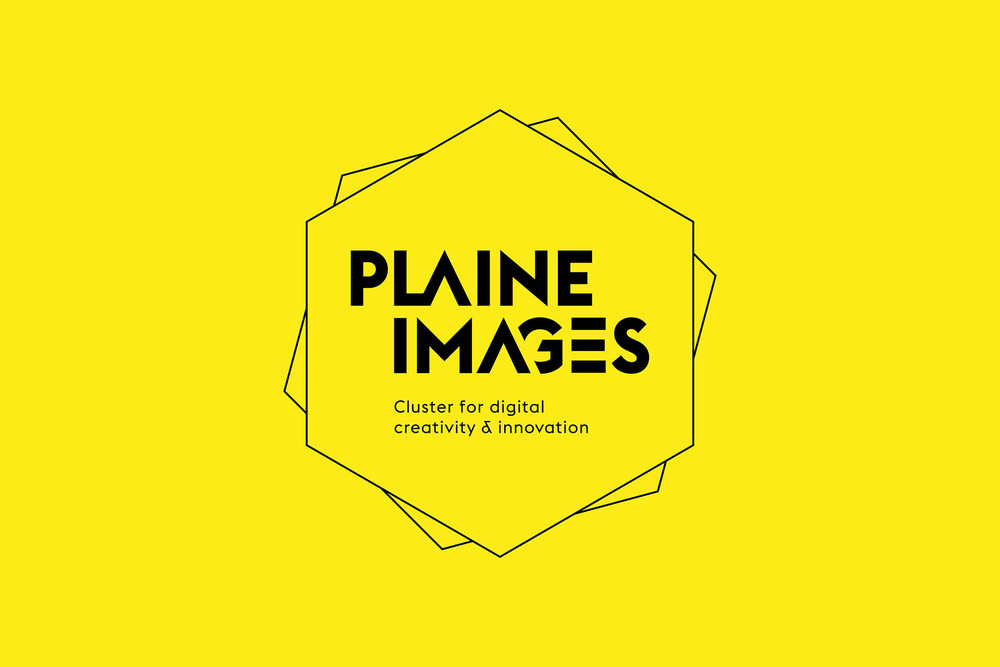

Sur un ancien site industriel de 5 hectares exceptionnellement réhabilité, la Plaine Images offre un quartier entièrement consacré aux industries créatives : audiovisuel – jeu – AR/VR – Design (réalité virtuelle, jeux vidéo, serious game/e-learning, animation, marketing digital, événementiel…). De la start-up à l’entreprise internationale, la Plaine Images favorise le développement des entreprises, stimule les convergences. Les projets innovants des industries de demain se bâtissent au sein de son incubateur (35 projets...) ! Objectif 2021 : 3 000 personnes & 200 entreprises ! LA PLAINE IMAGES C’EST… 125 entreprises 40 000m2 de bureaux 1 800 salariés, chercheurs, étudiants, coworkers 35 projets en incubation 3 écoles : Pôle IIID, 3W academy et le Fresnoy (studio national des arts contemporains), 2 centres de recherche 250 h de permanences d’experts 1 équipe et des experts dédiés au développement de l’entreprise 2 studios de tournage Des espaces pour la location de vos événements 1 laboratoire de playtests 2 studios de doublage, post production son Au cœur d’une métropole de 1,2 millions d’habitants Au sein d’un grand projet d’éco-quartier de 80 ha
La Plaine Images 